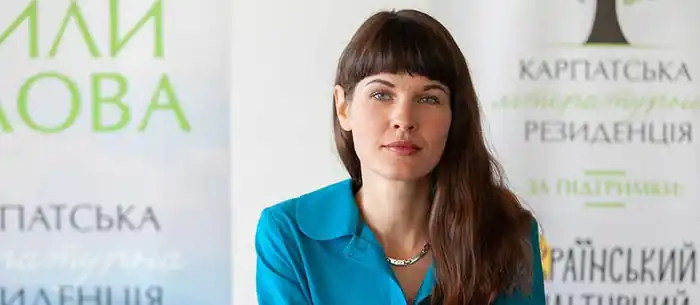

Народилася в родині військових 1 серпня 1986 року в Карцаґу, Угорщина.
З 2007 по 2009 рік працювала арт-менеджеркою новоствореної київської книгарні "Є", з 2010 по 2015 – львівської книгарні "Є".
У листопаді 2013 року пройшла стажування в Парижі за програмою Courants du monde від Дому культур світу, у рамках якої протягом двох тижнів знайомилася з французькою книжковою галуззю. У грудні 2015 року очолила арт-напрям мережі книгарень "Є". У жовтні 2017 року була призначена заступницею директорки з розвитку державної установи "Український інститут книги". З 2010 по 2017 рік була редакторкою відділу "Культревю" в "Українському журналі" ("УЖ", Прага). З вересня 2016 року до квітня 2017 року вела книжкову передачу на кримськотатарському радіо "Хаят" – "Радіокнигарня з Анастасією Левковою". Розробляла положення конкурсу для письменників та перекладачів "Кримський інжир / Qirim inciri", заснованого 2018 року Кримським домом. У 2018 році була програмною директоркою фестивалю "Запорізька книжкова толока". У 2019 році – кураторка проєкту Українського ПЕН "Мереживо. Літературні читання у містечках України". Наразі мешкає у Львові. Авторка книжок "Старшокласниця. Першокурсниця" ("Видавництво Старого Лева", 2017), "Ашик Омер" (Портал, 2020), "Спільна мова: як народжуються і живуть слова" (Портал, 2020). Роман для підлітків у щоденниках "Старшокласниця. Першокурсниця" ввійшов у короткий список премій "Книга року BBC – 2017" та "ЛітАкцент – 2017", здобув відзнаку "Барабуки" за номінацією "Дебют року в прозі".